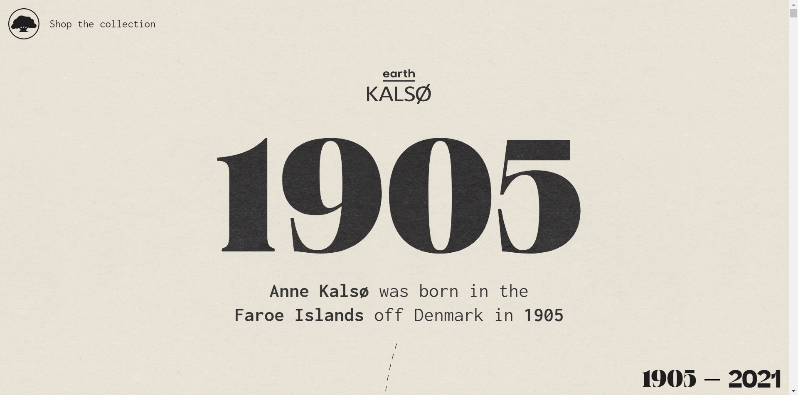
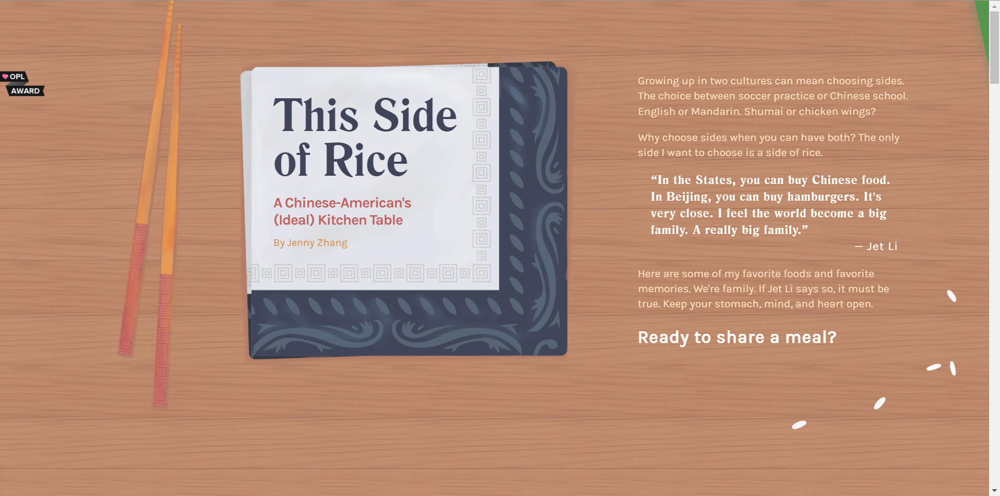
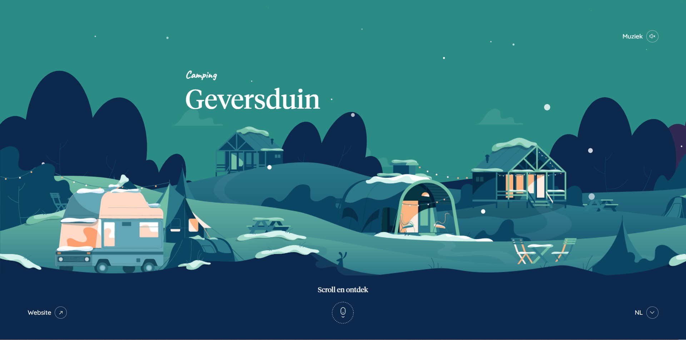

Kalso: The Story Behind The Original Wellness Shoe
I was inspired by the simplicity of the website and the smooth transition from one element after another. I also like the animations as they were quite simple, however I will not borrow this
kind of animation as it is quite sudden
popping out the moment I land on the right area to trigger it. Still, if I were to use a similar concept of this popping-out animation, I would reduce the speed to match the rhythm of the calm sea. Otherwise, the colour palette is
coherent and simple, and the navigation is straightforward.

This Side of Rice by Jenny Zhang
As for this wonderful website done by Jenny Zhang, the way she demonstrated the content and the visuals of her topic is how I would like to present my topic by simply showing the information
and explanations through the parallax
scrolling with visual support. Also, the sense of playfulness and style of her illustrations are something I am interested in doing. But I would also like to work with images to emphasize on the need of rescuing endangered sea
turtles

Camping in Geversduin, Netherlands for Christmas and New Year
Las but not least, this website inspired me with its playfulness. Intrigued by how the animations and transitions of element depicting the "joyful holiday" with the parallax scrolling, I would
like to imitate or replicate this
sense
of
narrative. I also like the fact the website is very minimalist, showing just the bare minimal instructions for user to navigate through the website. I like the idea of including a soundtrack to enhance the experience and the
indicator
to scroll.